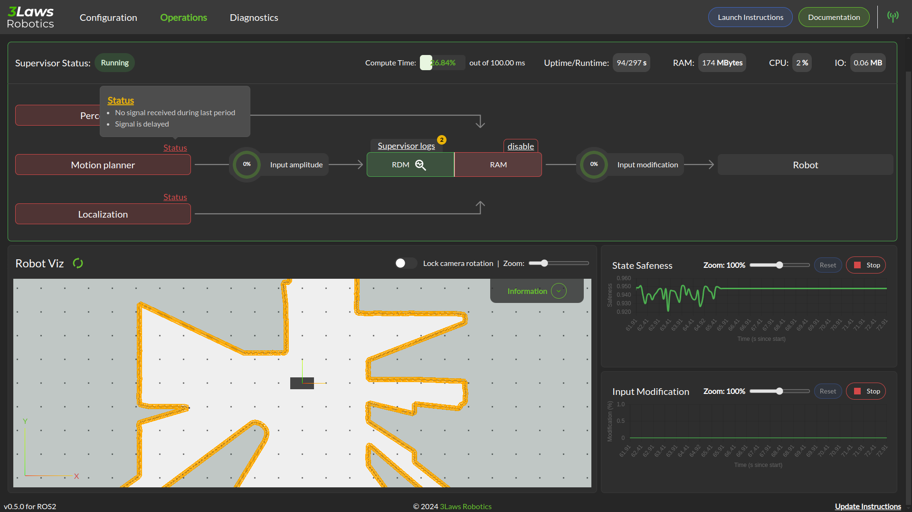

Operations
Status

In the image above, the Supervisor is operational and all the components necessary for proper collision avoidance are configured to be active. The Diagnostic module is also operational and no issue as been detected (RDM pill in green).
If some of the components are not yet operational, the Control Panel will show the boxes in different colors (orange for warning, red for errors). To get additional information about the error, you can check the logs by clicking on the button above the RDM/RAM pill. You can also click on the Status on top of the box to get details on the error source.
{kind=link}
The above image shows a situation where all components are down. We have clicked on the detail status of the Motion Planner components.
A blue box indicates that the component is not yet operational and still initializing.
The lower section of the panel show logs and strip charts. The categories that are currently displayed include:
Latest logs: Shows the most recent event from the RAM’s Fault Manager.
State Safeness: the Barrier Function (safety-related metric) value. When this value goes to zero or below zero, the system is evaluated as being in a collision state.
Input Modification: When this value is zero, the Run-time Assurance Module is passing the input from the planner through to the lower-level UNchanged. That is, the filtering is in passive mode. When this value is non-zero, the Run-time Assurance Module is actively modifying the commanded input.
Warning
In order to make this page work, the Rosbridge server needs to be active, and the Control Panel must connect to it.
Visualization
Visualization of the Runtime Assurance Module (RAM) metadata is available through Rviz. This tab of the control panel will provide you with a link to download an Rviz configuration file consistent with the current Supervisor configuration.